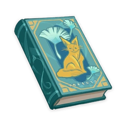

The Fox in the Dandelion Sea¶

Vol. 1¶
Note
"Dandelion, Dandelion, ride the wind to a faraway land," the Fox chants.
An unforgettable Mondstadt fairytale about a hunter and a fox. The Fox in the Dandelion Sea, an 11-part story, begins here.
"Dandelion, dandelion, ride the wind to a faraway land."
The little fox chanted.
He blew the dandelion flower and sent the seeds flying. He then spoke in a more serious tone.
"May my teacher's wishes ride the wind and reach the Anemo Archon."
A wind blew past us and swept away the dandelion seeds.
Did they fly to a better place, carrying my hopes and dreams there with them?
When did this happen?
Some time ago, behind the village, there grew a forest of countless lush trees. At the center of this forest was a small lake.
The lake was like the stained glass windows of Mondstadt Cathedral: crystal clear and shimmering in the sunlight.
The sun shone through the treetops and glistened on the water's surface like fragments of gemstone. It was really something.
The weather was cool that day. I was hunting in the forest when I arrived at the lake's edge. The shimmering water somehow reminded me of a girl I loved a long time ago.
I couldn't remember much about her, but felt that her eyes must have looked like the lake, glittering as if harboring fragments of gemstone within.
I became lost in thought as I stared at the glistening water. Walking transfixed along the lakeside, I had forgotten entirely that I was out for a hunt.
I came to when I heard the sound of something freezing up. It was a Mist Flower growing by the lake, having just frozen the water around it. Next to it was a white fox, its tail frozen in the ice. Poor critter.
"It must have had its tail in the water by the Mist Flower while it was drinking."
Mist Flowers are dangerous plants and can cause frostbite if handled without care. Extreme caution must be taken when handling them.
As it saw me approach, the fox struggled in fear, but its still-frozen tail kept it rooted to the spot. The fox whimpered in pain.
"Oh no, this won't do."
I thought to myself.
"Poor critter. It's gonna die anyway if I don't save it, may as well end its pain by bringing it home as my game for the day."
I imagined what a delicious fox stew I could cook with the carrots I grew. Just thinking about it gave me energy and brought a smile to my face.
So I took out my hunting bow and slowly walked toward it.
"Be good and stay put."
Vol. 2¶
Note
"Be good and stay put."
Trapped by a Mist Flower, what does fate have in store by the fox who met a hunter? The story of the Hunter and the Fox continues in Part 2.
"Be good and stay put."
That's what my father's father had taught me. When I went fox hunting, I always chanted his words silently, so that my hands wouldn't shake when pulling the bowstring.
But just as I was about to release the arrow, the fox lifted its head and looked me straight in the eye. It had eyes like the lake, glistening as if harboring fragments of gemstone within.
My head began spinning, as if a strong wind were blowing inside it. My arrow missed its target and instead smashed the ice, releasing the fox's tail. The fox raised its tail and looked at me once more before running off into the forest.
I came to my senses and began the chase — but who in this world can run faster than a fox?
Gradually, the fox began to shrink into the distance, eventually turning into a white spot.
"Hey! Don't go!"
I shouted, barely catching my breath.
After hearing my words, the spot seemed to slow.
"Is it waiting for me?"
I pondered.
"If running for its life, a fox is able to shake off anyone in no time."
Foxes are strange animals. Even when running on a flat plain like at Windrise, where one can see clearly for miles ahead, they somehow still seem to disappear from view.
It's almost as if they run into another world.
This led me to my conclusion:
"The fox must be waiting for me!"
Convinced of this fact, I chased the glittering white spot for hours on end. Suddenly, a chilling wind began to blow.
I stood there, shivering, and what I saw next astounded me.
"How can this be?"
Suddenly, instead of one, there were now two white spots.
More appeared. Three, four, five... They seemed to grow in number as the winds blew. Eventually I lost track.
Suddenly, with a stinging sensation, one of them flew directly into my eye. Upon inspection, I discovered that the spots were in fact nothing more than dandelion seeds floating in the wind. The fox had disappeared.
I laughed at my own foolishness and went home.
For supper, I had carrot fox stew — though without fox, or any other meat for that matter. The gods know how much I hate boiled carrots without meat! I felt starving, and in time fell asleep.
I awoke in the middle of the night to something stirring outside my door.
Vol. 3¶
Note
The Hunter of fruitless hunts was awoken by a commotion outside.
Who is at the door?
The story of the Hunter and the Fox continues. The Fox in the Dandelion Sea, Part 3.
Having failed to catch the fox, I went to sleep with only tasteless boiled carrots in my stomach. If not for what happened next, I would have forgotten about the fox by now.
I awoke with a start to strange noises coming from outside my door.
"Perhaps boars have come to eat my carrots?"
I hopped out of bed and opened my door. To my surprise, there stood a tiny little white fox. Its fur was so white that it glowed in the dark, not unlike the way sunlight sparkles on water after filtering through the treetops.
"This must be the same fox from earlier!"
I thought again of those eyes that looked like gemstones in the water, gazing at me as if from the depths of my heart.
And so I walked over to the fox, unarmed and with tired eyes.
This time it stayed still and waited for me in silence.
The closer I drew, the greater in stature it became.
By the time I stood before it, it had magically transformed into a human.
She was a tall and slender woman, with a swan-like neck and pearly skin. Her eyes sparkled like gemstone fragments in pools of water — in the darkness they seemed to shine like rays of sunlight on water after filtering through the treetops.
"What a beauty. She looks a lot like the girl I fell in love with long ago, though I barely remember her name. Those eyes tell me she must be her."
I thought to myself.
"This can't be. Must be some type of fox magic."
Stranger still, the idea of "fox magic" had only occurred to me in that instant. You'd believe anything after you'd seen those eyes.
For all the magic and transformation I had witnessed, nothing amazed me quite as much as the gemstone lakes of her eyes. For a while, we stood silently in the dead of night.
And at last she spoke. Though not in our common tongue, I could somehow understand her. Some other magic, perhaps.
"I would have died by that lake, if you had not come in my hour of need."
She paused and continued:
"Although to die by that gemstone lake is no bad thing,"
"We foxes are grateful beings, so you must let me return the favor."
She bowed to me, her long silky black hair flowing down her shoulders like streams.
Vol. 4¶
Note
After a few days apart, a long-awaited reunion takes place on a midsummer's night amidst a veritable blizzard of dandelion seeds.
At the direction of the fox, an ocean of dandelions opens up before the hunter's very eyes...
For the next few days after that night, the fox never came again.
But in those few days, prey in the forest became gradually more abundant.
Everything from small finches, long-legged cranes, and even scurrying boars...
Maybe it was the change in season, or some sort of repayment from the fox. Whatever the case, the following days brought real stew to the table.
But the fox never came again.
As strange as it may seem, it had honestly been easier to sleep hungry. Even with a full, satisfied stomach, I couldn't help but think about the day we met, and the woman that the fox had turned into...
When would I gaze upon her eyes again, glittering... like water in a lake.
Lying half-asleep with a heart full of turmoil, I heard a faint sound outside my door.
I hopped from the bed and swung the door open, eager to see a small white silhouette awaiting me.
But there were no lake-blue eyes, and there was no fluffy white foxtail. Instead, all I could see were dandelion seeds drifting in the white moonlight, floating like snowflakes in the air.
Suddenly, something got caught in my nostrils.
"Ah-Ahchooo!!!"
Immediately, the fluffy white dandelion seeds began to swirl, filling the sky like a snowstorm.
Amidst the flurry of dandelion seeds, a pair of jewel-like eyes were looking at me, staring straight into my heart.
Waving away the swirling dandelion seeds, I started walking towards the small fox.
The fox raised its ears and its furry tail flitted across the grass as it turned and disappeared into the depths of the forest.
I hurried and followed closely behind.
In amongst the darkness of the trees, soft patches of white could be seen weaving between the shadows.
Their silhouettes tip-toed like moonlight cast among the tree leaves, or like the hesitant strides of a crafty Seelie.
With unfaltering trust, I followed the fox round and about, soon emerging from the dark forest in a seemingly faraway land.
There, in the moonlight, a sea of dandelions lay before me, stretching as far as my eyes could see.
Stunned by the sight, I began to notice a rustling noise coming from just behind me.
It was a light, delicate sound. Like that of a girl walking barefoot across pine needles and leaves on the ground.
The fox approached me from behind. The night air ferried her presence, cool and damp, whisked together with the slightly bitter fragrance of dandelion flowers.
Two hands with slender, ice-cold fingers rested upon my shoulders.
She leaned in close to my ear and her long hair draped down over my shoulder.
Behind me, I felt the soft rhythm of both her breath and her heartbeat. It made me feel calm and at ease.
"Only the foxes know the way to this place. It is the homeland of the dandelions.
It is my desire that you would tarry here, and teach my child human language...
In return, I will teach you the magic of foxes."
There was a tickle in my ear, as if one of the dandelion seeds had grazed it on its journey into the warm night air.
Strange. I had certainly never mentioned anything about magic to her before. How could she have known?
Without answering, she took my hand and led me into the depths of the sea of dandelions.
The night breezes from both north and south carried the bitter fragrance of dandelion flowers and faded memories...
In those fields of velvet white, she showed me how foxes play gently together in their own fashion, until the moon rose high into the starry sky.
Vol. 5¶
Note
Upon accepting the Fox's conditions, he came to the place where all the prey who disappeared had eventually gone to — an endless field of dandelions.
The story of the Hunter and the Fox in the sea of dandelions. The Fox in the Dandelion Sea, Part 5.
In a boundless sea of dandelions that existed in the middle of nowhere, I watched as the seeds took off at the softest touch of the breeze. Suddenly, I knew the answer to that question that had been lingering on my mind for years.
"So all the foxes that disappear during the hunt, this is where they hide away."
I thought to myself.
"What a beautiful place."
But when I began teaching the little fox to speak our common tongue, my heart always felt empty, like a wind was blowing inside of me.
When we talked, I would look into her gemstone-lake eyes. In those moments I felt like I was speaking not to the fox, but to a girl I used to love many years ago.
And so, when she was around me, it was as if I were in the presence of the child of someone I had once loved: We had an enjoyable time together, but the experience was somehow tinged with sadness.
But the thought of her promise — if I succeeded in teaching her child to speak the common tongue...
"I shall impart the magic of transformation to you when the time comes."
Remembering the way she made that solemn promise to me... I knew she was serious, and that gave me determination.
Could I transform into a flying bird once I'd mastered the magic? How high would I be able to fly? Maybe I could transform into a fish, and finally have the chance to go to Musk Reef.
"I could even use magic to hunt!" I couldn't contain my excitement. "No more meatless carrot stews for me..."
I lost track of how long I stayed in the dandelion sea, where everything sways gently with the wind.
One reason was that the little one was such a fast learner! I taught him not only our language, but everything I knew in one package, including how to count, how to grow carrots, how to change window panes, and how to sharpen knives.
When it came to rest, we would talk idly.
"Why must you learn human speech?"
He answered swiftly:
"So that when I transform into a human, I can befriend them!"
I continued:
"Why would you want to befriend the humans?"
He dropped his gaze.
Vol. 6¶
Note
"Why do you want to learn the language of humans?" "So I can befriend humans when I become one." The child-like voice says, in the sea of dandelions. The Fox in the Dandelion Sea, Part 6.
"Why must you learn human speech?"
On one occasion, I asked the little fox this question.
He answered cheerfully in the common tongue:
"So that when I transform into a human, I can befriend them!"
"Why would you want to befriend the humans?"
This seemed to make him sad, and he dropped his gaze.
"I saw a boy in the distant forest."
"He was dressed in gray. He looked and had eyes like a wolf," he added.
"I had just mastered my magic, and was running around excitedly on my hind legs. Running on grass was fun! But sadly, due to the difference in height, a fox can't see or smell the same things that a human can."
"I'm sure you can guess what happened next, teacher! Suddenly, I realized a horrible truth — I was lost."
There was pain in his voice as he relayed the events of that day.
In the end, he had wandered into some faraway wood, and encountered vicious monsters.
Just when he thought he was done for, the gray lupine boy suddenly leapt out of the forest and chased away the monsters. Without a word, he then turned around and vanished into the woods.
"If I could transform into a human and speak their language, I could track him down and make friends with him!"
He said gleefully.
I couldn't help but ask when I heard his reply:
"Am I not your friend?"
The little one answered sincerely in the common tongue:
"Mommy told me that it's different because you're my teacher — but I'd only hurt you if I tell you that."
He tilted his head in befuddlement. His fluffy tail patted the surrounding dandelions as he pondered over this difficult issue.
"I know!"
He burst out.
"If I know something that you don't, that would make me your teacher."
"If we are both teachers, that would make us equals — then we can be friends!"
Still unfamiliar with the common tongue, he did his best to get the sentence out quickly.
"Teacher, please allow me to teach you some magic that only I know."
Vol. 7¶
Note
"Dandelion, Dandelion, ride the wind to a faraway land," the Fox chants.
Can the Hunter also learn magic to make his wish come true? The Fox in the Dandelion Sea, Part 7.
"Teacher, please allow me to teach you some magic that only I know."
Still unfamiliar with the common language, he did his best to get the sentence out quickly, eager to befriend me.
He picked a little dandelion.
"Dandelion, dandelion, ride the wind to a faraway land."
The little fox chanted.
He blew the dandelion flower and sent the seeds flying. He then spoke in a more serious tone.
"May my teacher's wishes ride the wind and reach the Anemo Archon."
A wind blew past us and swept away the dandelion seeds.
"See? The Anemo Archon has just answered my wish!"
He exclaimed merrily.
"What wish did you make?"
"To become friends with my teacher."
He lowered his head abruptly.
"It must have been tiring to teach him to speak your language. Our mouths are structured differently from a human's, so I must thank you for your effort."
We had not noticed the mother fox approaching. Her eyes were like bottomless lakes, and the little fox quietly hid himself among the dandelions to escape her gaze.
"When he has mastered human language,"
I thought to myself.
"When he has mastered human language,"
She said softly.
Vol. 8¶
Note
"When he has mastered human language..." The fox's voice is gently carried away by the midnight breeze, drifting further and further away together with the dandelion seeds...
After all, the fox is a different kind of creature from the human, and the two do not share all the same sense of mirth and misery...
"When he has mastered human language..."
Thus she softly said.
I looked at her face, mesmerized.
I couldn't hear what she said after that. The mischievous night breeze was laden with dandelion seeds, which muffled her words.
Or perhaps that was her native language? The language of dandelions?
She began to laugh as she perceived my clumsy, gauche appearance.
She had the most beautiful laugh. The curved pupils in her eyes glistened like two crescent moons shining on ripples in the lake.
"Now, tell me then, why is it you wish to learn fox magic?"
"I want to learn to transform just like foxes do. That way I could turn into a bird and fly to the highest of heights, and behold places that were once too far for my eyes to see."
That was my reply.
"Ahh yes, no longer will I need to lie in wait among the bushes while hunting. Instead, I will be able to freely soar high above like a falcon."
Thus I kept thinking to myself.
As I was thought to myself, the dandelion seed in my hand began to float up towards the moonlight, almost as if it had heard my thoughts.
"I see..."
She lowered her head slightly and her long, black hair flowed down her neck like a waterfall, glistening in the moonlight. Her pale white skin shone brightly, seemingly reflecting the wisps of clouds in the night sky above.
I couldn't take my eyes off her. After a moment, I quickly turned my gaze away as I started blushing again.
Foxes are free animals. They would never cover their beauty because of shame like humans do.
Although this certainly wasn't the first time I beheld her, every time the moonlight shone upon her long hair, I couldn't help but blush and look away.
She turned her face in thought for a moment, and let out a gentle sigh. She seemed rather displeased.
We sat amidst the dandelion sea, not saying a word. A long time passed, long enough that I started thinking that she might be angry with me.
"We foxes are grateful beings. I will teach you the magic of transformation, and so fulfill your wish."
The fox said, turning her face towards me.
Her lake-blue eyes shone in the moonlight, and it made me feel at peace.
Thank goodness, she wasn't mad at me.
For some reason I could not clearly name, I quietly heaved a sight of relief.
Vol. 9¶
Note
When I have taught all that there is to teach, will it be possible to see this sea of dandelions again...?
In the dandelion sea, the hunter starts to contemplate leaving.
Foxes are clever animals. Clever and cunning.
The little fox learned very quickly, and could sometimes even ask questions that would stump me.
For human speech is complicated and intricate, nothing like the innocence of animal speech.
Sometimes, language is like a yarn ball caught in the paws of a cat. It catches here and there, and there again it catches a student's tongue, sometimes even tripping a teacher up.
But foxes are clever animals, and very quickly they learn the many intricacies of human speech that were handed down over the generations, becoming able to describe the way dandelions float away, or how the moonlight shines over the lake in a rudimentary manner.
Every time the little fox discovered a new word, every time he tried using unfamiliar words to explore a familiar world, to bestow meanings upon the wind, dandelions and the earth, she would be beside him, smiling, watching us.
The little fox learned very quickly, but I did not take much joy from that.
When I had run out of things to teach, would she still keep me here in this dandelion sea?
When that time came, would I still be able to behold those beautiful eyes under the moonlight?
Would she still lead me into the depths of the dandelion sea, smiling slyly as we frolicked and breathed in the bitter fragrance that came from both the north and south winds?
As I thought about such things, I became lost in sullen memory.
Yes, that's right. On that night that I could no longer remember clearly, when I was about to part with the girl I loved, this same moon had hung in the sky as well.
"Thank you for everything up till now."
Before I knew it, the fox had walked in front of me. She bowed, and her hair spilled over her shoulders, flowing like water in the glimmering moonlight.
"Once he has learned human speech, he should be able to make more new friends."
"I am truly thankful to you for all you've done. He has also cheered up significantly since beginning to learn the human language."
She gazed at me, her deep, unfathomable eyes shining like jewels.
"Still, once you have finished teaching us the human language, where will you go then?"
Enraptured by those shining eyes, I forgot to reply.
Was this fox magic, too?
Seeing my wooden expression, the fox laughed and sighed.
Then, she turned and began walking in the direction of the moon, leading me further into the center of the moonlit dandelion sea.
Seeing this, the little fox swished its tail from side to side, and burrowed into the dandelion fields.
Vol. 10¶
Note
The somber parting has finally arrived... The Fox bids farewell to its mother, teacher, and the dandelion sea. It's time to live up to the promise. The Fox in the Dandelion Sea, Part 10.
The little fox kept waving back to us as he walked. His figure grew smaller and smaller until it became a tiny white spot, which blended into the dandelion sea and slowly faded away.
After he had gone, the mother fox turned and walked over to me.
The closer she drew, the greater in stature she became.
By the time she stood before me, she had transformed into a human.
She was a tall and slender woman, with a swan-like neck and pearly skin. Her eyes sparkled like gemstone fragments in pools of water — in the darkness they seemed to shine like rays of sunlight on water after filtering through the treetops.
"What a beauty. She looks a lot like the girl I fell in love with long ago, though I barely remember her name. Those eyes tell me she must be her."
I thought to myself.
For all the magic and transformation I had witnessed, still nothing amazed me quite as much as the gemstone lakes of her eyes. For a while, we stood silently in the boundless dandelion sea.
At last, I could no longer contain myself, and opened my mouth:
"Is this the magic you wanted to teach me? The magic of transformation?"
"It is. I am most grateful to you for all your help over this long period."
She bowed to me, her long silky black hair flowing down her shoulders like streams.
Although saying farewell to the little fox left emptiness in my heart, I soon became exhilarated at the thought of the transformation magic that I was about to learn.
Could I transform into a flying bird once I'd mastered the magic? How high would I be able to fly? Maybe I could transform into a fish, and finally have the chance to go to Musk Reef.
"I could even use magic to hunt!" I couldn't contain my excitement. "No more meatless carrot stews for me..."
"Then I shall ask you to stand still."
She walked circles around me, her stature growing with every pass.
No, not just her. The dandelions were also growing in size! They had only been at my ankles when she started, but now stretched to over my waist, growing as if turning into towering trees.
It was only when I started to feel strange that I realized that the fox had become a giant.
Vol. 11¶
Note
"Dandelion, Dandelion, ride the wind to a faraway land," the Fox chants.
An unforgettable Mondstadt fairytale about a hunter and a fox.
The Fox in the Dandelion Sea, the final installment.
I started to feel strange, and then I noticed — I had turned into a dandelion!
Even if I wanted to protest, the dandelion had no mouth nor tongue for me to make a sound. All I could do was watch helplessly as the giant gently picked the dandelion plant from the ground and held it between her thumb and index finger.
"Dandelion, Dandelion, ride the wind to a faraway land."
The fox chanted.
And then with a puff, the dandelion seeds began to dance in the air. I was caught in a storm and whisked away to a distant sky.
The swirling made my head dizzy. Those eyes that glistened like gemstones in the lake had left me, along with my consciousness and the promise she had made.
"Oh, Anemo Archon, I beg you to turn us into humans! For only then can we be safe from their hunting bows and knives."
...
When I awoke, I found myself in the woods behind my village.
The woods were full of lush trees, and at the center of the woods was a small lake.
The lake was like the stained glass windows of Mondstadt Cathedral: crystal clear and shimmering in the sunlight.
The sun shone through the treetops and glistened on the water's surface like fragments of gemstone. It was really something.
The weather was cool that day. I was hunting in the forest when I arrived at the lake's edge. The shimmering water somehow reminded me of a girl I loved a long time ago.
I couldn't remember much about her, but felt that her eyes must have looked like the lake, glittering as if harboring fragments of gemstone within.
Hmm. I must have lost myself in thought that day, drifting off into sleep as I watched the sparkling lake.